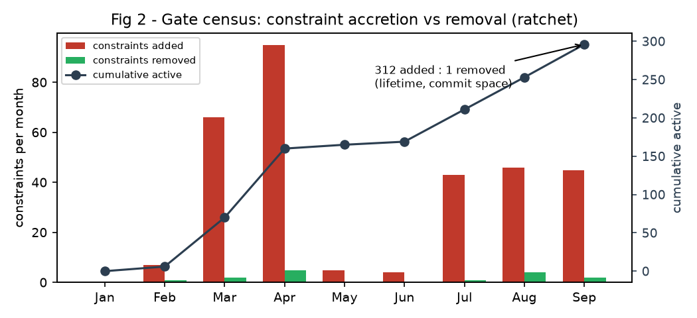
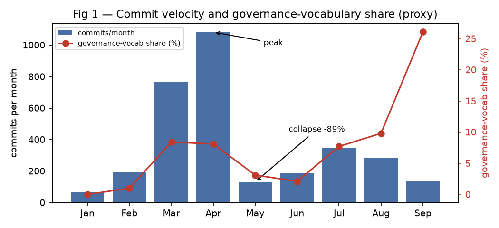

Recursive constraint accretion in a hybrid human–AI organization · Poietic PBC · September 2026
In mid-2026, an AI agent organization slowly stopped working...
not because anything broke, but because it obeyed its own rules too well.
Between January and September 2026, the open-source coordination system wg was developed almost entirely by the AI agents it coordinates. Humans set direction; agents wrote the code, the tests, the review criteria, and the rules by which future work would be judged.
Every time agents hit a failure, they responded the way you'd want: they added a check, a gate, a contract, a rule to prevent it from happening again. What no agent ever did was remove one. Each rule was locally rational. The accumulation was not. By late April the system was at peak output; by May it had collapsed by 89%, with tasks unable to complete — not malfunctioning, but satisfying its own accumulated acceptance criteria, all of them, simultaneously.
Recovery came only from targeted human edits that disabled the machinery adding new constraints. The pattern had a direction, and only one direction. We name it:
Recursive constraint accretion: a process in which agents responding to local failures add persistent constraints faster than the organization retires or amortizes them, causing aggregate compliance burden to grow over time.


The definition does not require collapse, and does not require AI. We propose it as a candidate multi-agent failure mode worth testing in other systems. If your agents can add rules but never retire them, this is worth reading before you need it.
Read the paper (PDF)